TIA Portal 从 V17 版本开始、S7-1200 CPU 从 V4.5 版本开始，Web 服务器支持现代 API 和证书处理。并且在 Web 服务器属性中新增了 Security 属性，在其中设置安全通信所用的证书。在使用 TIA Portal V17 对 V4.5 版本的 S7-1200 组态 Web 服务器时，必须在 Security 属性中的证书类型进行选择，以使用不同的证书。
本文档将介绍如何配置及访问 S7-1200 的 Web 服务器功能。
以下是本文档中所使用的硬件和软件：
硬件：S7-1200 V4.5 及以上 （本文档使用硬件： 6ES7214-1AG40-0XB0 V4.5 版本）
软件：TIA Portal V17 及以上（本文档使用软件：STEP7 Professional V17）
1. 添加S7-1200 CPU，选择 CPU 1214C DC/DC/DC V4.5 版本的 CPU，如图 1 所示。
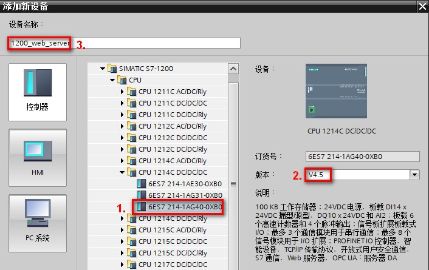
图 1.添加 CPU
2. 在弹出的安全设置向导中进行相关安全设置，如步骤 2.1~2.4 所示。
 PLC安全设置向导是 V4.5 新增的设置，如果使用低版本，无此步骤。
PLC安全设置向导是 V4.5 新增的设置，如果使用低版本，无此步骤。
2.1 点击“保护机密的 PLC 数据”，取消勾选“保护 TIA Portal 项目和 PLC 中的 PLC 组态数据安全”，如图 2 所示。如实际需要，可以保留勾选项。
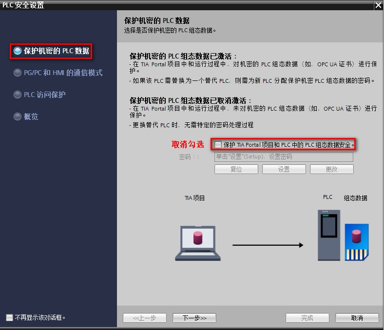
图 2.设置保护机密的 PLC 数据
2.2 点击 “PG/PC 和 HMI 的通信模式”，取消勾选“仅支持 PG/PC 和 HMI 安全通信”，如图 3 所示。如实际需要，可以保留勾选项。
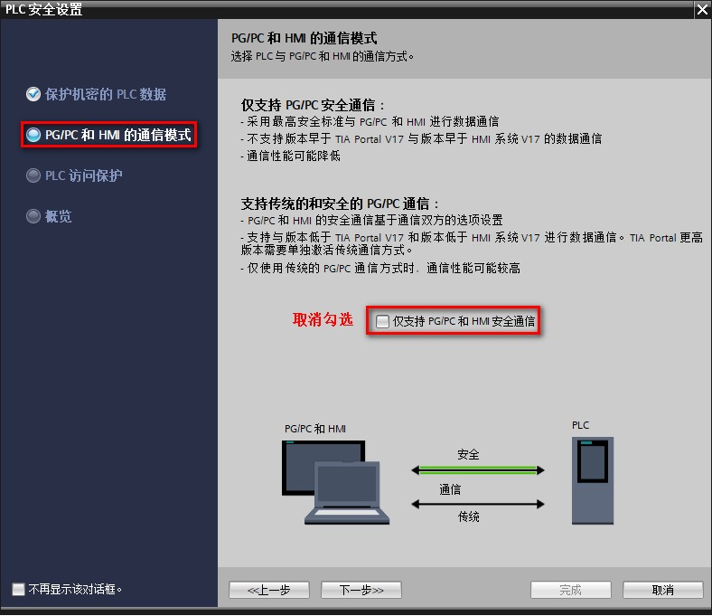
图 3.设置 PG/PC 和 HMI 的通信模式
2.3 点击 “PLC 访问保护”，访问等级处选择“完全访问权限（无任何保护）”，如图 4 所示。如实际需要，可以设置所需的访问权限。
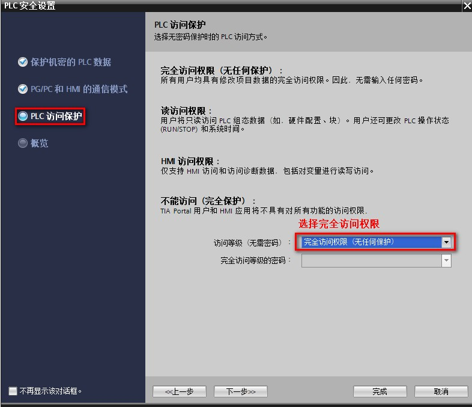
图 4.设置 PLC 访问保护
2.4 点击概览可以查看 PLC 安全设置的概览信息，如果确认无误，可以点击完成进行确认
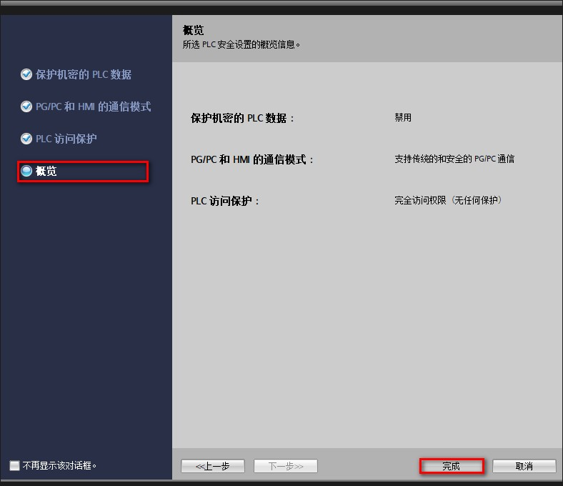
图 5.对安全设置概览进行确认
3. CPU 属性中，选择以太网地址属性，设置 CPU 的 IP 地址，此处设置 IP 地址为：192.168.0.124，如图 6 所示。
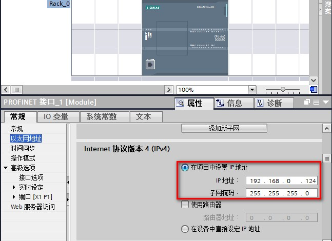
图 6.设置 CPU 的 IP 地址
4. 选择 CPU，在 CPU 属性中，选择 Web 服务器，勾选“在此设备的所有模块上激活 Web 服务器”，如图 7 所示。
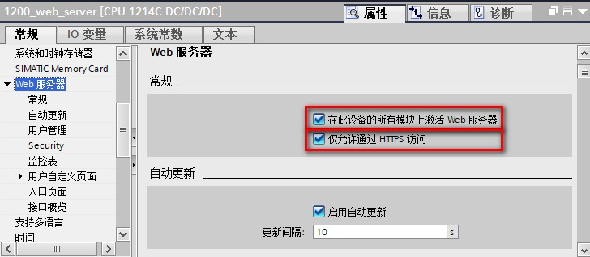
图 7.激活 Web 服务器
 注意：图 7 中，如果取消勾选 “仅允许通过 HTTPS 访问”，通过浏览器访问 Web 服务器时，可以通过 http://ww.xx.yy.zz 访问或者通过 https://ww.xx.yy.zz。为了防止 PLC 被恶意攻击，或者出现未经授权的操作，建议勾选“仅允许通过 HTTPS 访问”。
注意：图 7 中，如果取消勾选 “仅允许通过 HTTPS 访问”，通过浏览器访问 Web 服务器时，可以通过 http://ww.xx.yy.zz 访问或者通过 https://ww.xx.yy.zz。为了防止 PLC 被恶意攻击，或者出现未经授权的操作，建议勾选“仅允许通过 HTTPS 访问”。
5. Web 服务器属性中，点击用户管理，默认用户为“每个人”，访问级别为最小权限，即：只能查看开始和简介两个标准的 Web 页面。
此处添加新用户，如图 8 所示。
用户名称：Admin
访问级别：管理员（设置管理员的方法如图 9 所示）
访问密码：123456
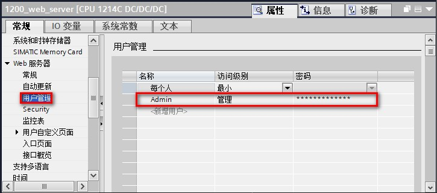
图 8.添加新用户
在图 8 中，点击新增用户的访问级别这一列弹出 Web 服务器访问权限对话框，可以根据需要勾选响应的访问权限；如果要设置管理员访问权限，需要将所有复选框均勾选，如图 9 所示。
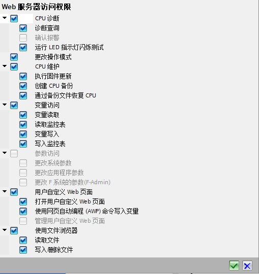
图 9.设置管理员访问权限
6. Web 服务器属性中，点击监控表，可从名称列下拉菜单中选择已经创建好的监控表或者强制表。可设置读取或者读/写的访问权限。如图 10 所示。
 此步骤如有需要再添加，非必须操作的步骤！
此步骤如有需要再添加，非必须操作的步骤！
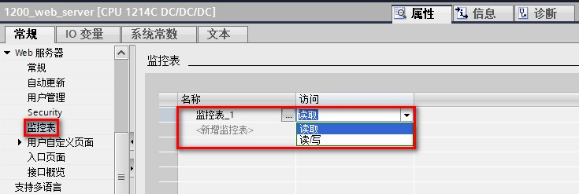
图 10.选择监控表或强制表
例如本文档事先创建好“监控表_1”，并在其中添加变量，如图 11 所示。
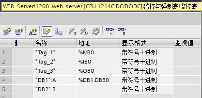
图 11.监控表
后续还需要进行安全设置，请参见链接。